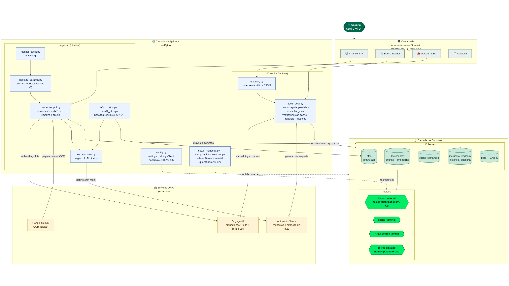
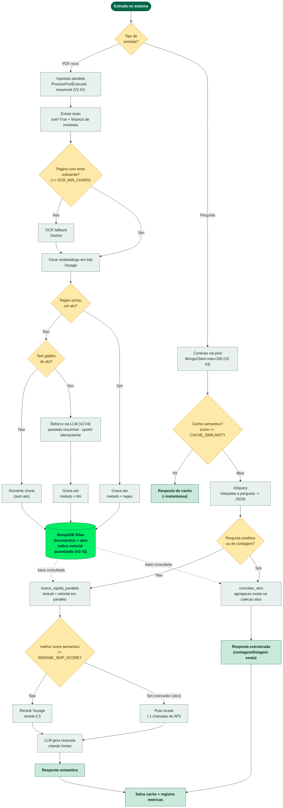

Visão geral em 4 camadas
Todo o sistema se organiza em quatro camadas. Os dois ciclos de vida — ingestão de um PDF e resposta a uma pergunta — atravessam essas mesmas camadas em sentidos diferentes.
1 · Camada de Apresentação — Streamlit
💬 Chat com IApergunta em linguagem natural
🔍 Busca Textualbusca direta, sem LLM
📤 Upload de PDFsingestão manual
📋 Auditoriamétricas e rastreabilidade
2 · Camada de Aplicação — Python
ingestao_paralela.pyvários PDFs ao mesmo tempo V2 #1
processar_pdf.pyextrai texto, limpa e divide em chunks
extrator_atos.pyregex + LLM: transforma texto em dado estruturado
nl2query.pytraduz a pergunta em filtros de banco
tools_dodf.pybusca paralela, cache, rerank, métricas
3 · Serviços de IA (externos)
Voyage AIembeddings 1024d + rerank-2.5
Anthropic Claudegera a resposta e reforça a extração
Google GeminiOCR de páginas sem texto
4 · Camada de Dados — MongoDB Atlas
documentoschunks + vetor de embedding
atosnomeações, exonerações — estruturado
cache_semanticorespostas já dadas
métricas / auditoriatempo, ferramentas, feedback
pdfs — GridFSarquivo original preservado
busca_vetorialquantização escalar V2 #2
Atlas Search textualbusca por palavra
cache_vetorialsimilaridade de perguntas
B-tree em atosnome · tipo · ano · órgão
Mensagem-chave da demonstração: um único banco — MongoDB Atlas — atende
busca vetorial, busca textual, consulta estruturada, cache e armazenamento do arquivo original.
Não há um segundo banco de vetores nem um motor de busca separado.
Ciclo 1 — do PDF publicado ao dado pesquisável
Avance passo a passo: o quadro em destaque mostra onde o processo está naquele momento.
1
Pipeline de ingestão
📄 PDF do DODFupload manual ou pasta monitorada
→
Fila paralelaProcessPoolExecutor · resumível V2 #1
→
Extração de textoordem de leitura + limpeza
→
OCR de exceçãoGemini, só se a página vier vazia
Divisão em chunks1.500 caracteres · 300 de sobreposição
→
Embeddings em loteVoyage · 1024 dimensões
→
Extração de atosregex primeiro
→
Reforço por LLMClaude, no que o regex não pegou V2 #4
🍃 Gravação no Atlasdocumentos + atos + GridFS
→
Índices atualizadosvetorial quantizado + textual + B-tree
✅ Pronto para consultao PDF já responde perguntas
Decisão 1 — a página tem texto?
Se ficar abaixo do mínimo configurado, a página vai para OCR (Gemini). Caso contrário segue direto,
economizando tempo e custo.
Decisão 2 — o regex identificou o ato?
Sim → grava com
método = regex (rápido e gratuito). Não, mas há palavra-gatilho →
entra na fila de reforço por LLM. Nenhum dos dois → permanece apenas como chunk pesquisável.Ciclo 2 — da pergunta à resposta com fonte citada
O sistema escolhe o caminho mais barato que responde corretamente. Avance para ver as três rotas possíveis.
1
Fluxo de consulta
👤 Pergunta do usuário"quantas nomeações em 2025?"
→
Conexão do poolMongoClient reaproveitado V2 #3
→
Cache semânticoa pergunta já foi feita?
→
⚡ Resposta do cacherota A · ~1,3 s
nl2queryinterpreta a intenção → filtros JSON
→
Consulta analíticaagregação exata na coleção
→
atos📊 Número exatorota B · ~2,8 s · sem alucinação
Busca paralelatextual + vetorial simultâneas
→
Rerank condicionalVoyage só quando faz diferença
→
Claude redigeusando apenas os trechos recuperados
→
📝 Resposta com fontesrota C · arquivo + página
Grava cache + métricasa próxima pergunta igual custa ~1,3 s
Decisão 1 — cache semântico
Compara o vetor da pergunta com perguntas anteriores. Acima do limiar de similaridade, devolve a
resposta pronta e encerra o ciclo.
Decisão 2 — é pergunta de contagem?
Se sim, vai para a coleção
atos e o número sai de uma agregação do MongoDB —
não de uma estimativa do modelo.Decisão 3 — precisa de rerank?
Quando a busca vetorial já tem um vencedor claro, o rerank é dispensado e economiza uma chamada de API
V2 #3
Números reais da base
Medidos diretamente no ambiente em uso — úteis para dar concretude à demonstração.
124edições do DODF processadas
6.435páginas indexadas
51.714chunks pesquisáveis
8,0chunks por página (média)
1.110caracteres por chunk (média)
57,4 micaracteres de texto útil
1024dimensões por vetor
100%consultas bem-sucedidas
Latência medida por rota
O caminho escolhido determina o tempo de resposta — daí a importância do cache e da rota analítica.
| Rota | Mediana | p95 | O que acontece |
|---|---|---|---|
| A · Cache semântico | 1,3 s | 1,6 s | Só recuperação; nenhuma chamada de LLM |
| B · Consulta analítica | 2,8 s | — | Agregação exata na coleção atos |
| C · Busca semântica | 11,9 s | 35,2 s | Recuperação + rerank + geração pelo LLM |
Conclusão técnica: a diferença entre 1,3 s e 11,9 s é quase toda tempo de API de LLM,
não de banco. Por isso as otimizações da V2 atacam o número de chamadas externas (cache e rerank condicional),
e não o tamanho do cluster.
O que a Versão 2 acrescentou
| # | Melhoria | Ganho |
|---|---|---|
| 1 | Ingestão paralela e resumível | Vários PDFs por vez; retomada após falha sem reprocessar |
| 2 | Quantização escalar do índice vetorial | Menos memória por vetor, recall praticamente intacto |
| 3 | Pool de conexões + rerank condicional | Suporta acessos simultâneos; evita chamada de API desnecessária |
| 4 | Reforço de atos por LLM | Recupera atos que o regex não capturou, sem reprocessar a base |
Diagramas técnicos
Versões detalhadas, para a parte técnica da apresentação.

Arquitetura completa — camadas, coleções e índices

Árvore de decisão — todos os desvios da ingestão e da consulta